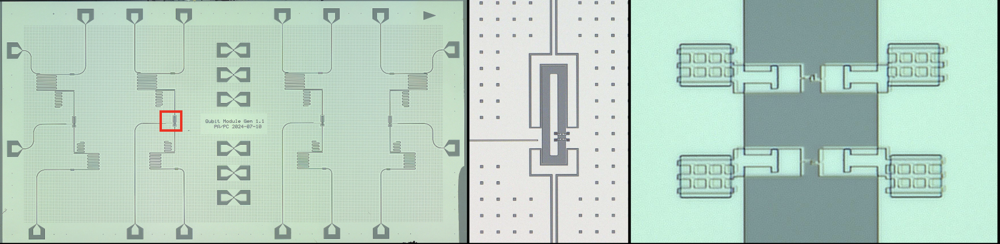
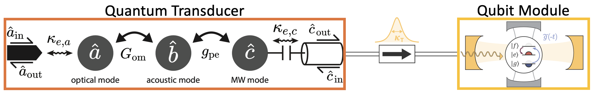
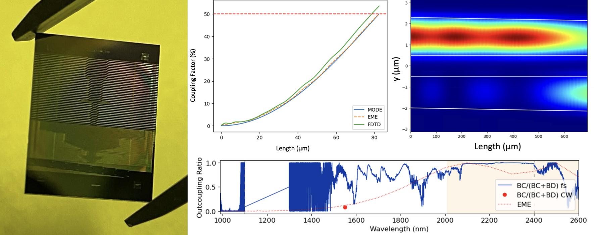

Here are some of the projects I've worked on:
Prof. Oskar Painter, California Institute of Technology (April 2024 - December 2024)
 
I designed, fabricated, and characterized a superconducting transmon qubit module for integration with a quantum optomechanical transducer to realize a ‘node’ in a quantum network capable of emitting optical photons, which are entangled with superconducting qubits inside the node. To ensure efficient capture of microwave photons emitted by the transducer, I optimized the circuit geometry based on a prototype module to achieve better photon absorption efficiency. I also implemented asymmetric superconducting quantum interference devices (SQUIDs) to improve quantum coherence of the qubits. This qubit module can be implemented in a future quantum network distributing entanglement across remote superconducting processors.
Final report available here.
Prof. Alireza Marandi, California Institute of Technology (January 2023 - December 2023)

Integrated photonics based on thin film lithium niobate (TFLN) has been a promising all-optical solution for low-cost and energy-efficient communication, sensing, and computing. Due to its strong non- linearity, TFLN has emerged as a promising foundation for modern systems including photonic computing. However, all computers require a combination of linear and nonlinear operations. While these elements have been demonstrated individually on TFLN, they have yet to be combined on the same chip to implement a full computer. To do so requires further optimization of both components to make them compatible with each other. One vital component of the circuits is optical couplers. This project optimized several types of couplers and performed fabrication sensitivity tests on them. These were done by using commercial software, and then the results were verified by using different simulation methods, including FDE, EME, and FDTD. The real devices were then fabricated, and the results were measured.